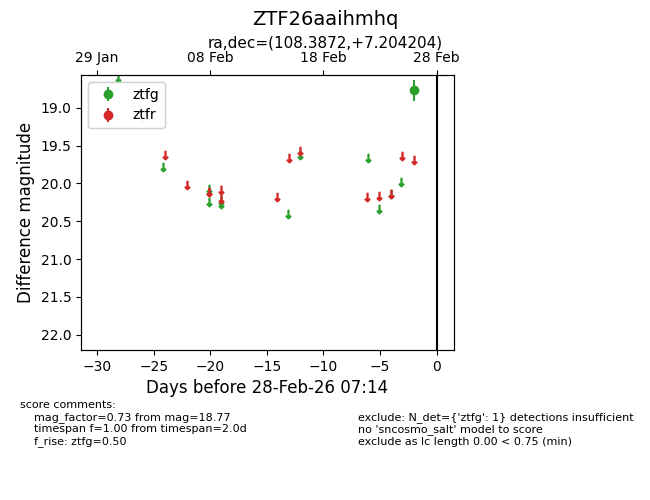
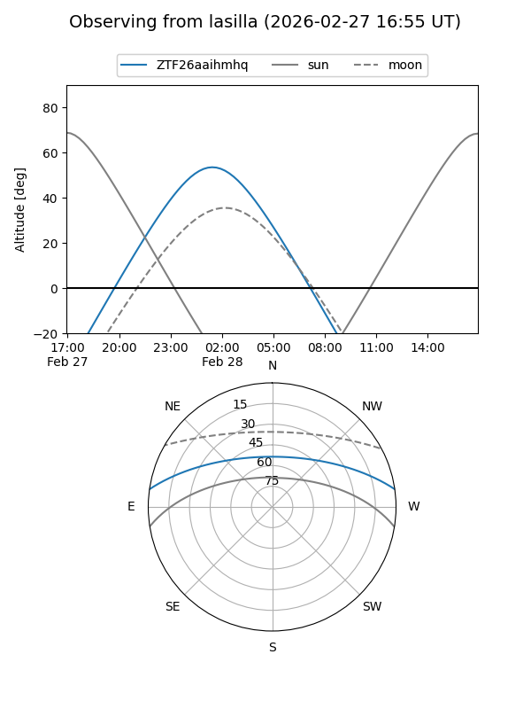
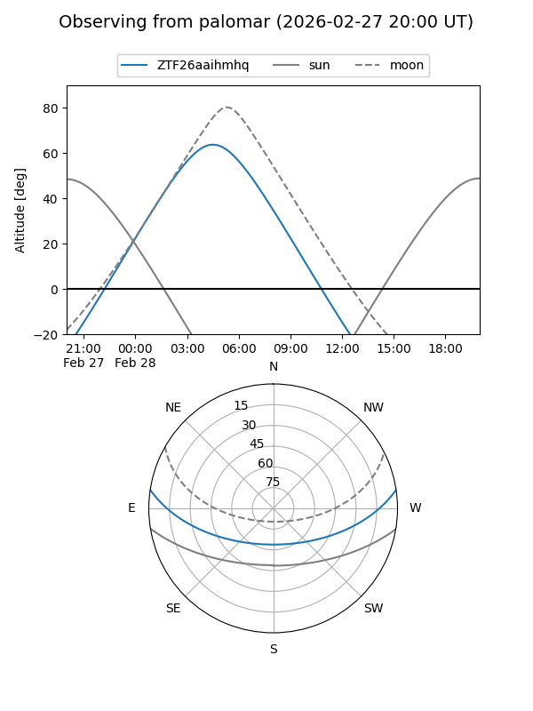

ZTF26aaihmhq
Target ZTF26aaihmhq at 2026-02-28 07:15
Aliases and brokers:
FINK: link
Lasair: link
ALeRCE: link
alt names
ZTF26aaihmhq (ztf,fink_ztf)
Coordinates:
equatorial (ra, dec) = 108.3872,+7.20420
equatorial (HMS+DMS) = 07:13:32.93,+07:12:15.14
galactic (l, b) = (208.9908,+8.17730)
Flags:
Photometry:
last ztfg=18.77
1 ztfg detections
Lightcurve

Visibility


Additional plots